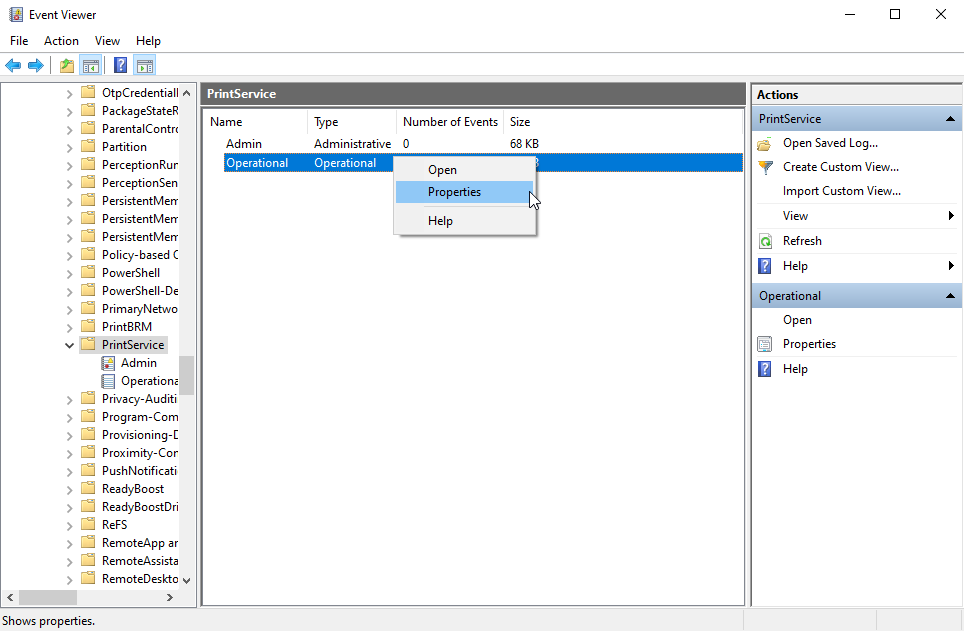
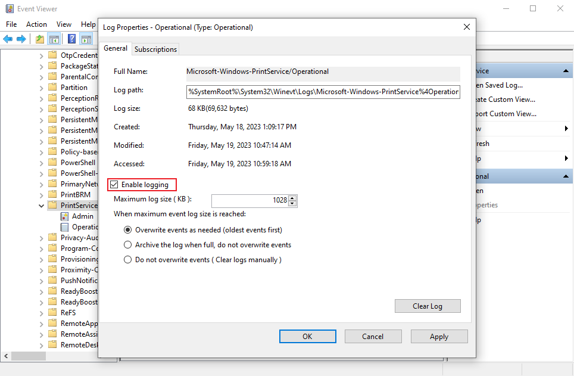
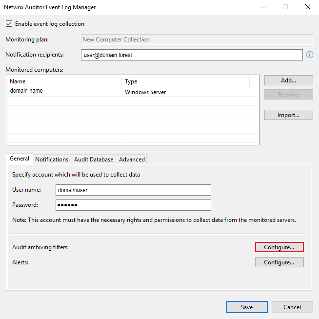
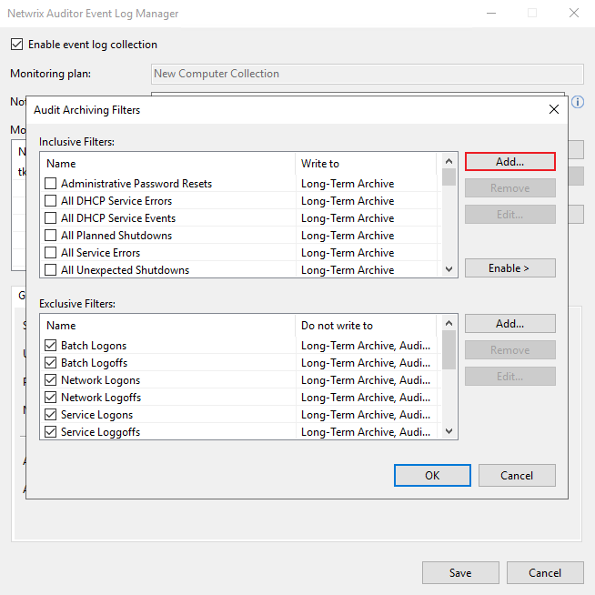
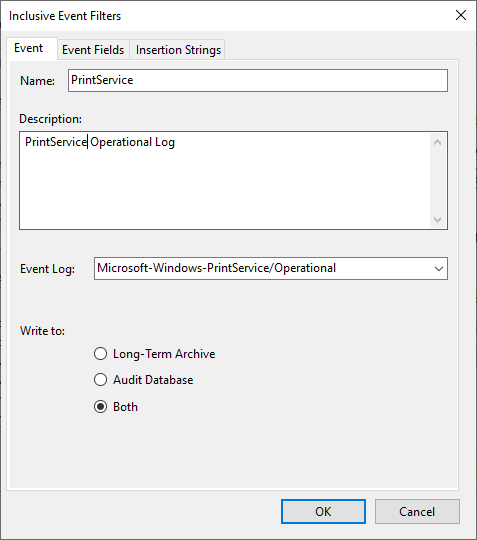
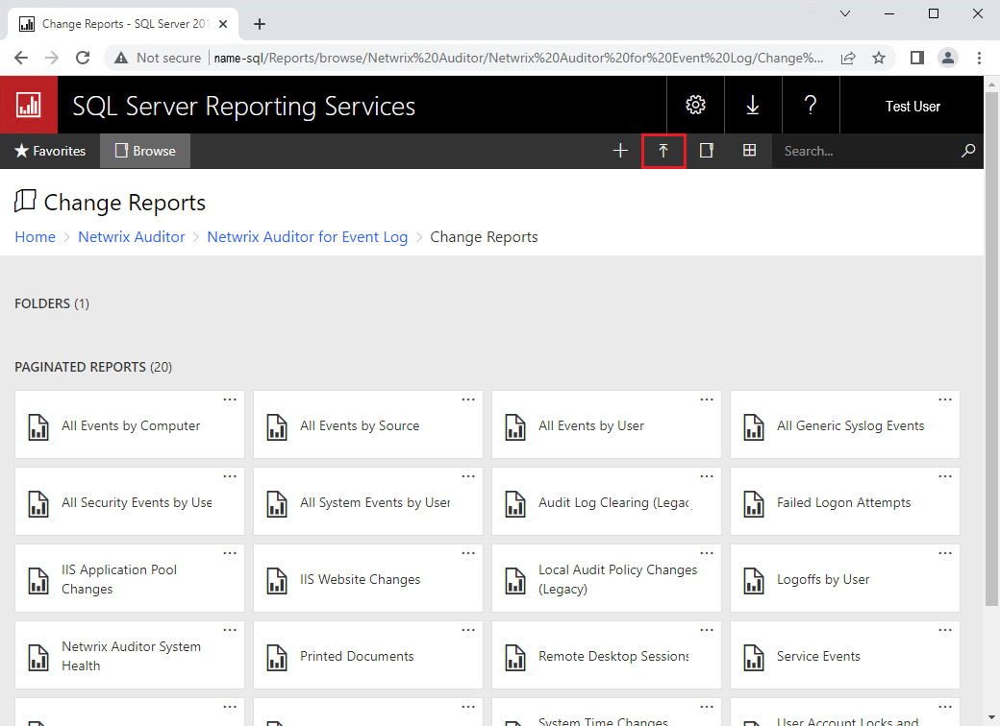
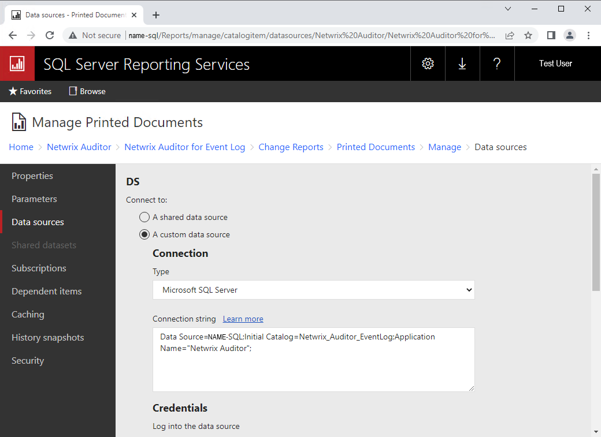
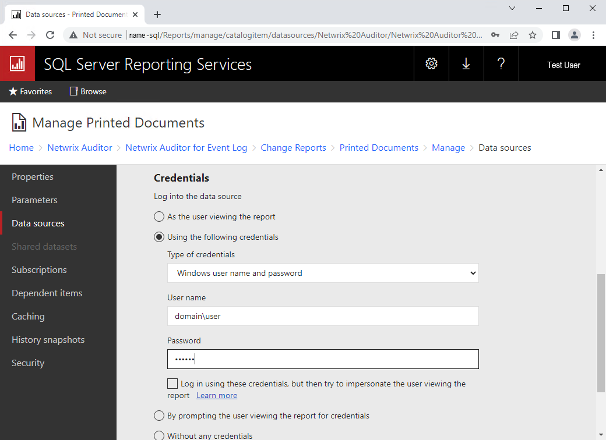
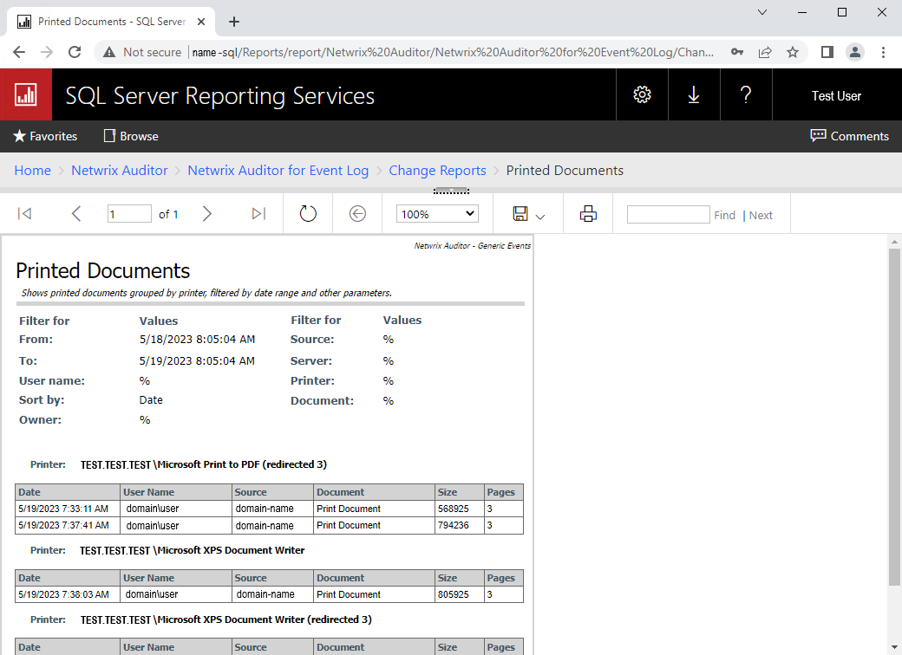

Question
How to track print usage statistics for a network printer?Answer
You can enable the print event logging by following the steps below:- Enable logging for the print service of the print server — open Event Viewer > Applications and Services Logs > Microsoft > Windows > PrintService.
-
Right-click the Operational item to select Properties.
 -
Check the Enable logging checkbox — print service events will now be logged.
Click OK to save changes.

Create an inclusive filter in Netwrix Auditor Event Log Manager:
- Create a new monitoring plan by clicking Add or select the preexisting monitoring plan and click Edit.
-
Click the Configure button for Audit archiving filters.
 -
Click Add for Inclusive Filters.
 -
Fill in the filter name and description with Event Log field to contain the
following line:
Microsoft-Windows-PrintService/Operational
Verify the location for the print server event logs via Event Viewer — the Log Name should correspond with the actual event logs location.
 - You can specify Event IDs in the Event Fields tab to filter the events (e.g. Event ID 307 for Printing a document). Additionally you can filter the events via Insertion Strings, refer to the index numbers specified in event details (e.g. Param1 stands for Index 1 with "Job #" value).
Download the Printed Documents RDL.zip archive provided below and extract the .rdl
file:
- Open the Reports Server URL in your browser and navigate to the folder you'd like to upload the report to (e.g. Home > Netwrix Auditor > Netwrix Auditor for Event Log > Change Reports).
-
Click Upload to upload the report to the folder.

Configure the report to use the Netwrix_Auditor_EventLog database:
- Click the meatball More info menu of the Print Service report to select the Manage tab.
- Select the Data sources tab to choose Custom data source.
-
Specify the Microsoft SQL Server connection type and enter the following connection
string:
Data Source=SQLINSTANCE;Initial Catalog=Netwrix_Auditor_EventLog;Application Name="Netwrix Auditor";
NOTE: SQLINSTANCE should be replaced with the name of your SQL Server instance.
 -
Input your credentials, test the connection and save the changes.
 -
The report is now available via the web interface of your Report Server. It will not
appear under Reports in the Netwrix Auditor console.
